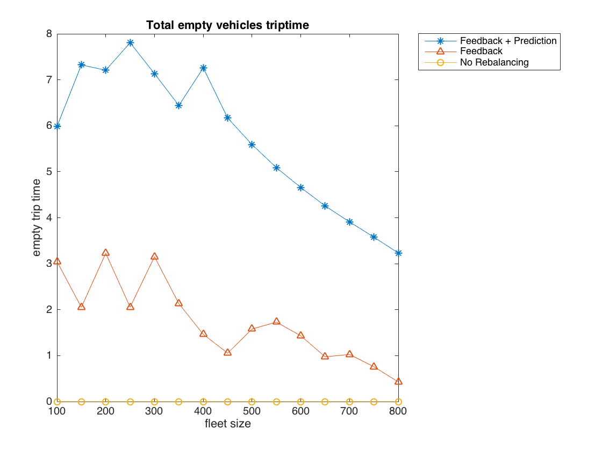
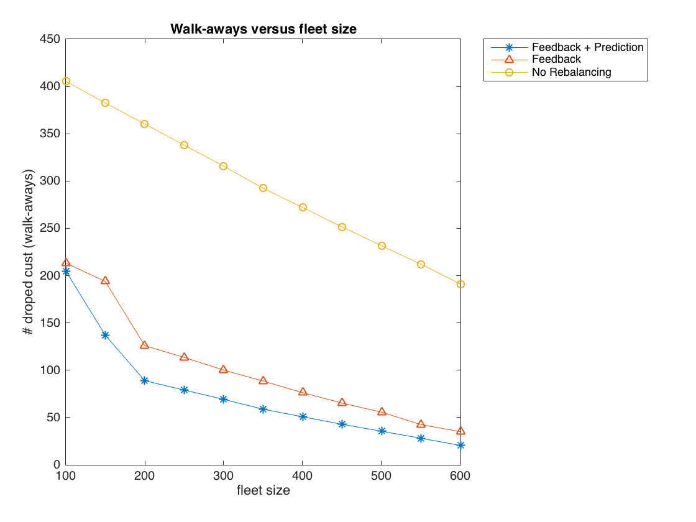
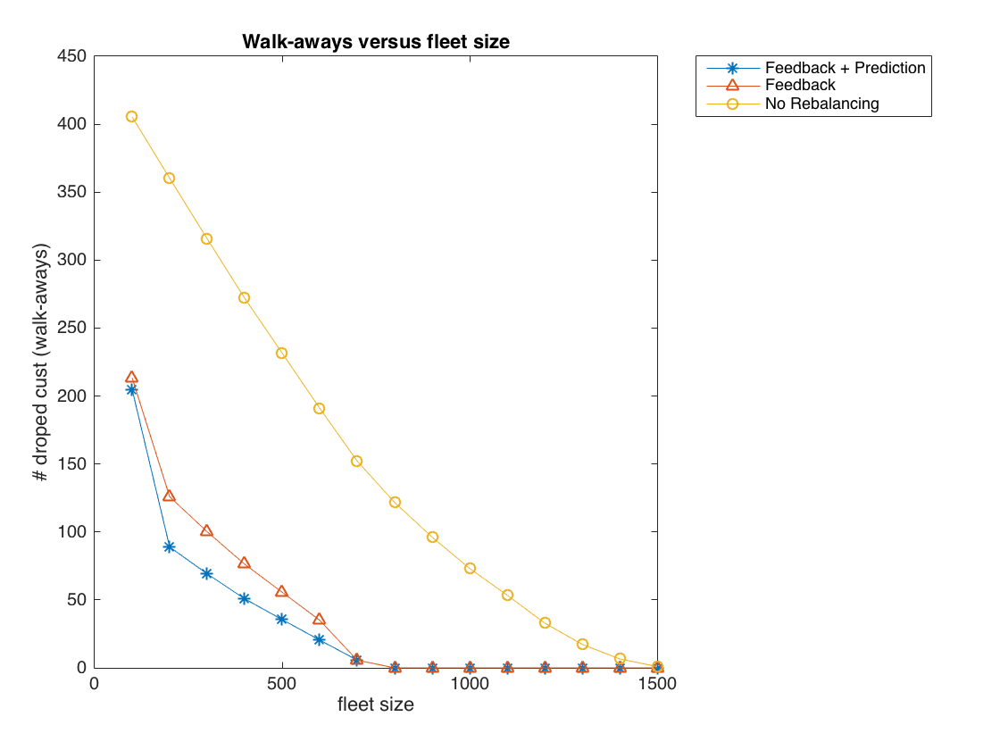

class: center, middle
### Shared-Vehicle Mobility-On-Demand Systems: Modeling and Optimization of Rebalancing Empty Vehicles over Hub-based Network
##### By Bingnan Lu and Wenhan Zhu
---
class: center, middle
#### A MoD system with rebalancing running

---
class: middle
#### Introduction
1. Increasingly urbanized world gradually complicates people's sustainable access to mobility service
2. Blooming of shared-economy market and advancements in mobility technology make it possible to increase the utilization of vehicle through sharing the accessibility across different time windows.
3. The mobility-on-demand (MoD) service system, Car2Go and Zipcar.
4. For MoD operators, one of their goals is to ensuring passengers to have reliable access to mobility service
5. High operational cost incurred by using human workforce in rebalancing makes MoD system less desirable compared with Automated MoD system.
---
class: middle
- `\(H = (V_H,E_H)\)` the network with `\(||V_H|| = N\)` hubs and let `\(x_i \in E_H \subset \mathbb{R}^2\)` be the location of hub `\(i\)`
- `\(T_{ij} > 0\)` the travel time between hubs `\(i\)` and `\(j\)`
- `\(\lambda_{i} (t)\)` the rate of customer arrival at hub `\(i\)` at time `\(t\)`
- `\(\lambda_{ij}(t)\)` the arrival rate at hub `\(i\)` of customer going from `\(i\)` to `\(j\)` at time `\(t\)`
- `\(\lambda_i(t) = \sum_j {\lambda_{ij}(t)}, ~ \forall ij \in E, ~ t \geq 0, \)`
- `\(q_i(t)\)` the total number of demands waiting at hub `\(i\)` at time `\(t\)`
- `\(v_i(t)\)` the total number of vehicle parked at hub `\(i\)` at time `\(t\)`
- `\(v_{ij}(t)\)` the total number of vehicles en route from hub `\(i\)` to `\(j\)` at time `\(t\)`
- `\(n\)` total number of autonomous vehicles, `\(n = \sum_{i \in V} v_i(t) + \sum_{ij \in E} v_{ij}(t)\)`
---
class: center, middle
#### The LP Model
$$
\begin{array}{lr@{}l}
\text{min} & \sum\_{i,j \in E} T\_{ij}n\_{ij} \\\\
\text{s.t.} & \sum\_{j} n\_{ji} - \sum\_{j} n\_{ij} & \geq n\_{i}^{des} - n\_{i}^{exc}, i\in V \\\\
& n\_{ij} & \geq 0, ij \in E
\end{array}
$$
---
class: middle
Determining \(n_{i}^{exc}\)
`\(n_{i}^{exc}\)` represents the vehicle available at each hub when rebalancing starts. There are some freedom in selecting this parameter. Such as
\(n_{i}^{exc} = v_i\)
\(n_{i}^{exc} = v_i + \sum_{j} v_{ji}\)
Let `\(m = \sum_{i \in V} n_{i}^{exc}\)` represent the total number of excess vehicles.
---
class: middle
Determining \(n_{i}^{des}\)
`\(n_{i}^{des}\)` represents the vehicle desired at each hub at the time of rebalancing. Let `\(q_{i}\)` represent the current demand at hub `\(i\)` and `\(Q = \sum_{i \in V} q_{i}\)`.
- Without prediction
$$
n\_{i}^{des} =
\begin{cases}
q\_{i}, & Q \leq m \\\\
\frac{q\_{i}}{Q} \cdot m, & \text{otherwise}
\end{cases}
$$
- With prediction
`\[
n_{i}^{des}
\begin{cases}
q_{i} + \frac{\lambda_{i}}{\sum_{j \in V} \lambda_{j}} \cdot m', & \text{if } Q i< m \\\\
\frac{q_{i}}{Q} \cdot m, & \text{otherwise}
\end{cases}
\]`
Where `\(\lambda_{i}\)` is the demand for hub `\(i\)`.
---
class:
Simulation
- Modeling
- Time steps
- Modeling the demand
- Transformation modes
- Parameters
- Demand at each hub
- Demand rate
- Number of vehicles at each hub
- Number of vehicles on the way
---
class: middle, center
#### Some comparison
With rebalancing

???
Rebalanced every 60 frames (seconds)
fleet size of 30
hub size of 10
rebalancing vehicles are in blue. When there is a edge with a rebalancing vehicle, the edges doubles it width.
---
class: middle, center
Without rebalancing

---
class: middle, center
#### Some examples

---
class: middle, center

---
class: middle, center

---
class: middle
#### Conclusion
Formulate the vehicle rebalancing problem of network-based Autonomous Mobility-On-Demand system using linear programing.
Conduct a practical assessment of the logistic benefits associated with various rebalancing schemes.
Use simulation to reveal how customer walk-aways and total empty trip time varies as a function of fleet size.
A graphic simulation of the system.
---
class: middle, center
## Thank you!